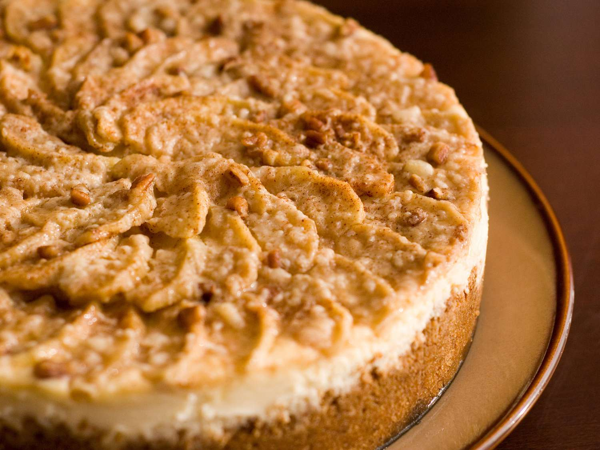

Apple Cheesecake

Description
This is a rich apple cheesecake topped with sliced apples, cinnamon,
and pecans. Great to make in fall when apples are at their best.
Ingredients
- Crust:
- 1 cup graham cracker crumbs
- 1/2 cup finely chopped pecans
- 1/4 cup unsalted butter, melted
- 3 tablespoons white sugar
- 1/2 teaspoon ground cinnamon
- Filling:
- 2 (8 ounce) packages cream cheese, softened
- 1/2 cup white sugar
- 2 large eggs
- 1/2 teaspoon vanilla extract
- Topping:
- 4 cups apples - peeled, cored, and thinly sliced
- 1/3 cup white sugar
- 1/2 teaspoon ground cinnamon
- 1/4 cup chopped pecans
Steps
- Preheat the oven to 350 degrees F (175 degrees C)
- To make the crust: Mix graham cracker crumbs, pecans, melted butter,
sugar, and cinnamon together in a bowl until well combined. Press into
the bottom of a 9-inch springform pan.
- Bake in the preheated oven for 10 minutes. Remove from the oven;
leave the oven on.
- To make the filling: Beat cream cheese and sugar in a mixing bowl
with an electric mixer on medium speed until smooth. Add eggs, one al
a time, beating well after each addition. Beat in vanilla extract.
Pour filling into the baked crust.
- To make the topping: Place apples in a bowl. Stir sugar and cinnamon
together in a smaller bowl; pour over apples and toss to coat. Spoon
sugared apples over filling, then sprinkle pecans over top.
- Bake in the oven until edges are puffed, 60 to 70 minutes. Run the
tip of a table knife around the edges of the pan, set the pan on a
wire rack, and allow the cheesecake to cool at room temperature, about
1 hour. Refrigerate until completely chilled, 4 hours to overnight.